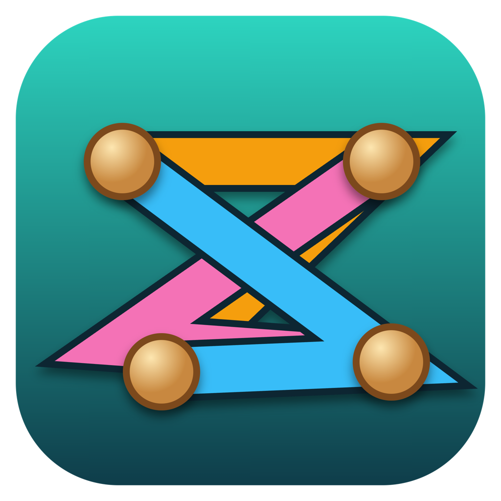

Knot Again
Drag the pegs to untangle colourful ropes so that none of them cross. Steel pegs are bolted down, and in later worlds ropes sit on different layers, so only ropes on the same layer may not cross. 200 levels across 5 worlds, with undo and hints. Drag with a finger or the mouse.
Or download the app:
Installers are unsigned: on macOS right-click → Open the first time; on Windows choose "More info → Run anyway". · Source